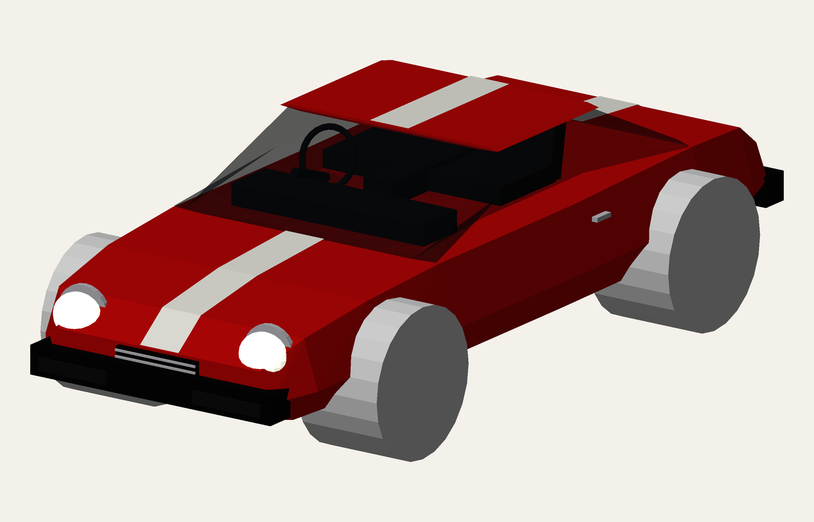
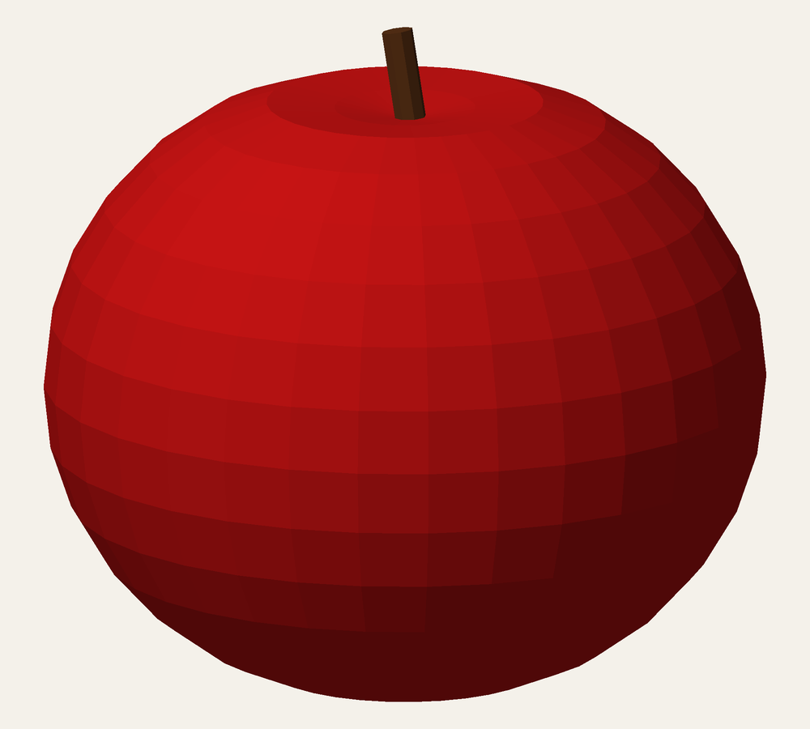

Мои работы в Blender
Эти модели я сделал сам, вручную. Сначала изучал, какие в Blender есть функции и куда что нажимать, а потом уже самостоятельно создавал модели. Модель можно покрутить мышью или пальцем, а рядом показаны изображения с разных сторон.
Спортивный автомобиль
Красная спортивная машина. Я собирал её по частям: кузов, колёса, фары, салон и другие детали. Это моя более сложная работа, на ней я потренировался соединять много деталей в одну модель.
Модель можно вращать: потяните мышью или пальцем.

Автомобиль: вид спереди сбоку
Нажмите на картинку, чтобы увеличить. Ракурсы можно переключать стрелками ← →.
Что использовал в Blender
Как я делал
- Сделал основу машины — кузов.
- Добавил колёса и другие детали: фары, салон, выхлопные трубы.
- Покрасил детали в разные цвета.
- Сохранил готовую модель, чтобы показать её на сайте.
Яблоко
Красное яблоко с коричневым черенком. Это моя первая модель в Blender: на простой форме я учился основным действиям.
Модель можно вращать: потяните мышью или пальцем.

Яблоко: общий вид
Нажмите на картинку, чтобы увеличить. Ракурсы можно переключать стрелками ← →.
Что использовал в Blender
Как я делал
- Взял шар и сделал из него яблоко.
- Добавил сверху тонкий цилиндр — черенок.
- Покрасил яблоко в красный цвет, а черенок — в коричневый.
- Сохранил модель, чтобы показать её на сайте.